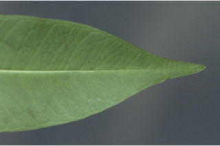
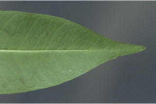

Small trees, up to 12 m tall.
12ಮೀ ಎತ್ತರದವರೆವಿಗೆ ಬೆಳೆಯುವ ಸಣ್ಣಗಾತ್ರದ ಮರಗಳು.
12 മീറ്റര് വരെ ഉയരത്തില് വളരുന്ന, ചെറു മരങ്ങള്.
சிறுமரம், 12 மீ. உயரம் வரை வளரக்கூடியது.
Bark lenticellate, blaze cream.
ತೊಗಟೆ ವಾಯು ವಿನಿಮಯ ಬೆಂಡುರಂಧ್ರಗಳ ಸಮೇತವಾಗಿರುತ್ತದೆ. ಕಚ್ಚು ಮಾಡಿದ ಜಾಗ ಕೆನೆ ಬಣ್ಣದಲ್ಲಿರುತ್ತದೆ.
പുറംതൊലി ശ്വസനരന്ധ്രങ്ങളോട് കൂടിയത്, വെട്ട്പാടിന് ക്രീം നിറം
மரத்தின் பட்டை பட்டைத்துளைகள் (லெண்டிசெல்லேட்) உடையது, உள்பட்டை கிரீம் நிறமானது.
Branchlets slender, glabrous.
ಕಿರುಕೊಂಬೆಗಳು ತೆಳುವಾಗಿದ್ದು, ರೋಮರಹಿತವಾಗಿರುತ್ತವೆ.
ഉപശാഖകള് നേര്ത്തതും, അരോമിലവുമാണ്.
நுனிக்கிளைகள் மெல்லியது மற்றும் உரோமங்களற்றது.
Latex milky white.
ಸಸ್ಯ ಕ್ಷೀರ ಹಾಲಿನ ಬಿಳುಪು ಬಣ್ಣವನ್ನು ಹೊಂದಿರುತ್ತವೆ.
പാല് പോലെ വെളുത്ത സ്രവമാണ്.
வெள்ளை நிறமான பால் போன்றது.
Leaves simple, opposite, decussate; petiole 1.3-1.9 cm long; lamina 6-12.7 x 1.4-2.5 cm, narrow elliptic-oblong to lanceolate, apex gradually acuminate to obtuse, base acute, margin entire, shining above, glabrous, chartaceous; midrib canaliculate above, with intramarginal veins; secondary_nerves many slender; tertiary_nerves admedially_ramified.
ಎಲೆಗಳು ಸರಳವಾಗಿದ್ದು, ಕತ್ತರಿಯಾಕಾರದ ಅಭಿಮುಖ ಜೋಡನಾ ವ್ಯವಸ್ಥೆಯಲ್ಲಿದ್ದು 1.3 ರಿಂದ 1.9 ಸೆಂ.ಮೀ. ಉದ್ದದ ಎಲೆ ತೊಟ್ಟನ್ನು ಹೊಂದಿರುತ್ತವೆ. ಪತ್ರಗಳು 6 - 12.7 x 1.4 - 2.5 ಸೆಂ.ಮೀ. ಗಾತ್ರ ಹೊಂದಿರುತ್ತವೆ. ಪತ್ರಗಳು ಅಂಡವೃತ್ತಾಕೃತಿ-ಚತುರಸ್ರಾಕಾರದಿಂದ ಭರ್ಜಿಯಾಕಾರವನ್ನು ಹೊಂದಿದ್ದು ಕ್ರಮೇಣವಾಗಿ ಚೂಪಾಗುವುದರಿಂದ ಚೂಪಾದ ಎಲೆ ತುದಿಯನ್ನು ಹಾಗೂ ಚೂಪಾದ ಎಲೆ ಬುಡವನ್ನು ಪಡೆದಿರುತ್ತವೆ. ಎಲೆಯ ಅಂಚು ನಯ. ಪತ್ರದ ಮೇಲ್ಭಾಗ ಹೊಳಪು ಹಾಗು ಕಾಗದವನ್ನು ಹೋಲುವ ಮೇಲ್ಮೈ ಹೊಂದಿದ್ದು ರೋಮರಹಿತವಾಗಿರುತ್ತದೆ; ಮಧ್ಯನಾಳ ಪತ್ರದ ಮೇಲ್ಭಾಗದಲ್ಲಿ ಕಾಲುವೀಕರಣಗೊಂಡಿದ್ದು ಅಂತರ ಅಂಚಿನ ನಾಳ ಸಮೇತವಾಗಿರುತ್ತವೆ. ಎರಡನೇ ದರ್ಜೆಯ ನಾಳಗಳು ಬಹುಸಂಖ್ಯೆ-ಯಲ್ಲಿದ್ದು ತೆಳುವಾಗಿರುತ್ತವೆ. ಮೂರನೇ ದರ್ಜೆಯ ನಾಳಗಳ ಕವಲುಗಳು ಎಲೆಯ ಅಕ್ಷದ ದಿಕ್ಕಿಗಿರುತ್ತವೆ.
ഇലകള് ലഘുവും സമ്മുഖ, ഡെക്കുസേറ്റ് ക്രമത്തിലാണ്; ഇലഞെട്ടുകള്ക്ക് 1.3 മുതല് 1.9 സെ.മി വരെ നീളം; പത്രഫലകത്തിന് 6 മുതല് 12.7 സെ.മി വരെ നീളവും 1.4 മുതല് 2.5 സെ. മി വരെ വീതിയും, ആകൃതി വീതികുറഞ്ഞ ദീര്ഘവൃത്തീയ-ആയതാകാരം മുതല് കുന്താകാരം വരെയുമാകാം, പത്രാഗ്രം ചെറുവാലോടു കൂടിയതോ ഉപകോണാകാരമോ ആണ്, പത്രാധാരം കൂര്ത്തതാണ്, അരികുകള് അവഭജിതമാണ് പത്രഫലകം മുകളില് തിളങ്ങുന്നതുമാണ്, കടലാസുപോലത്തെ പ്രകൃതം; മുഖ്യസിര, അന്തര് സീമാന്ത സിരകള്്ക്കൊപ്പം, മുകളില് ചാലോട് കൂടിയതാണ്,; ദ്വതീയ ഞരമ്പുകള് നേര്ത്തതാണ്; ത്രിതീയ ഞരമ്പുകള് അഡ്മീഡിയലി റാമിഫൈഡ് ആണ്.
இலைகள் தனித்தவை, எதிரடுக்கானவை, குறுக்குமறுக்கமானவை; இலைக்காம்பு 1.3-1.9 செ.மீ. நீளமானது; குறுகிய நீள்வட்டம்-நீள்சதுர வடிவம் முதல் ஈட்டி வடிவானது, அலகின் நுனி அதிக்கூரியதுடன் முதல் மழுங்கியவை, கூரிய தளமுடையது, அலகின் விளிம்பு முழுமையானது, பளபளப்பான மேற்பகுதியுடையது, கீழ்பரப்பு உரோமங்களற்றது, சார்ட்டேசியஸ், மையநரம்பு அலகின் பரப்பைவிட மேலெழும்பியது, விளிம்பு நரம்பு (இண்ட்ராமார்ஜினல் நரம்பு) கொண்டது; இரண்டாம் நிலை நரம்புகள் அதிகமானது, மற்றும் மெல்லியது; மூன்றாம் நிலை நரம்புகள் மத்திய நரம்பை நோக்கியவாறு கிளைகளுடையது (அட்மீடியல்லி ராமிபைடு).
Flowers in terminal or leaf opposed cymes, white, fragrant.
ಹೂಗಳು ಶ್ವೇತ ವರ್ಣ ಹೊಂದಿದ್ದು ಸುವಾಸನಾಯುಕ್ತವಾಗಿದ್ದು ತುದಿಯಲ್ಲಿನ ಅಥವಾ ಎಲೆಗಳಿಗೆ ಅಭಿಮುಖವಾಗಿರುವ ಮಧ್ಯಾರಂಭಿ ಪುಷ್ಪ ಮಂಜರಿಯಲ್ಲಿರುತ್ತವೆ.
ഉച്ഛസ്ഥമോ ഇലകള്ക്ക് സമ്മുഖമായോ ഉള്ള സൈമുകളിലുാകുന്ന വെളുത്ത പൂക്കള്, സുഗന്ധമുള്ളവയാണ്.
மலர்கள் தண்டின் நுனியில் அல்லது இலைக்கு எதிரான சைம், வெள்ளை நிறமானது, நறுமணமுடையது.
Drupe, globose, orange red when ripe, 1 or 2-seeded.
ಕಾಯಿಗಳು ಡ್ರೂಪ್ ಮಾದರಿಯಲ್ಲಿದ್ದು ಗೋಳಾಕಾರದಲ್ಲಿದ್ದು 1 ರಿಂದ 2 ಬೀಜಗಳನ್ನು ಹೊಂದಿರುತ್ತವೆ. ಕಾಯಿಗಳು ಹಣ್ಣಾದಾಗ ಕಿತ್ತಳೆ ಕೆಂಪು ಬಣ್ಣದ್ದಾಗಿರುತ್ತವೆ.
ഒന്നോ രണ്ടോ വിത്തോടുകൂടിയ, മൂക്കുമ്പോള് ഓറഞ്ച്-ചുവപ്പ് നിറത്തിലുള്ള, ഗോളാകാരമുള്ള കായകള് ആഭ്രകമാണ്.
உள்ளோட்டுத்தசைகனி (ட்ரூப்), கோளவடிவானது கனியும் போது ஆரஞ்சு சிவப்பு நிறமடைகிறது, 1 அல்லது 2 விதைகளையுடையது.


 
